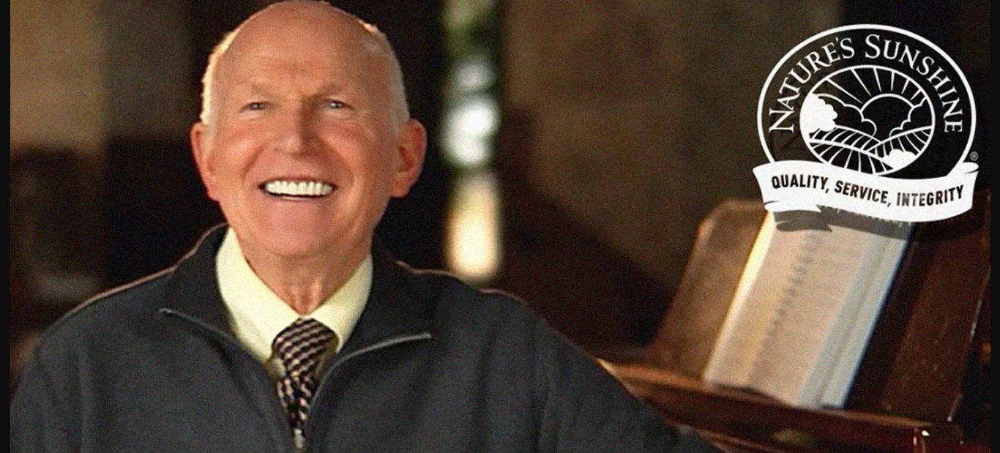

Nuestra Historia
Todo comenzó con pimiento en polvo, una hierba tradicional que Gene Hughes esperaba utilizar para su propia salud digestiva.
Al descubrir rápidamente que una cucharada de pimiento no era ni sabrosa ni conveniente, Gene necesitaba a alguien innovador.
Naturalmente, recurrió a su esposa, Kristine. Su solución: ¡cápsulas!
Hughes dedicó casi cinco décadas a revolucionar la industria del bienestar natural y a base de hierbas
y creó una empresa global multimillonaria a partir de una pequeña empresa familiar que comenzó con hierbas encapsuladas vendidas a tiendas naturistas.
Esto fue solo el principio de la historia. Al darse cuenta del potencial que su negocio tenía, la pareja decidió virar hacia el modelo de ventas de marketing multinivel.
Este modelo finalmente convirtió a Nature’s Sunshine en una de las emrpesas de marketing multinivel más grandes del mundo.
